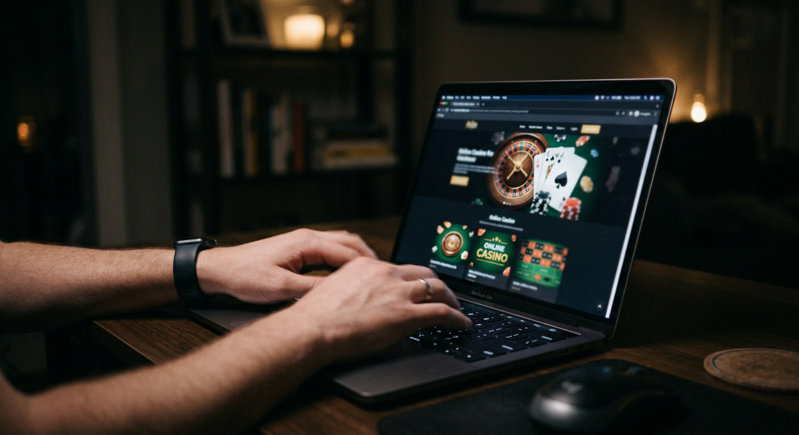
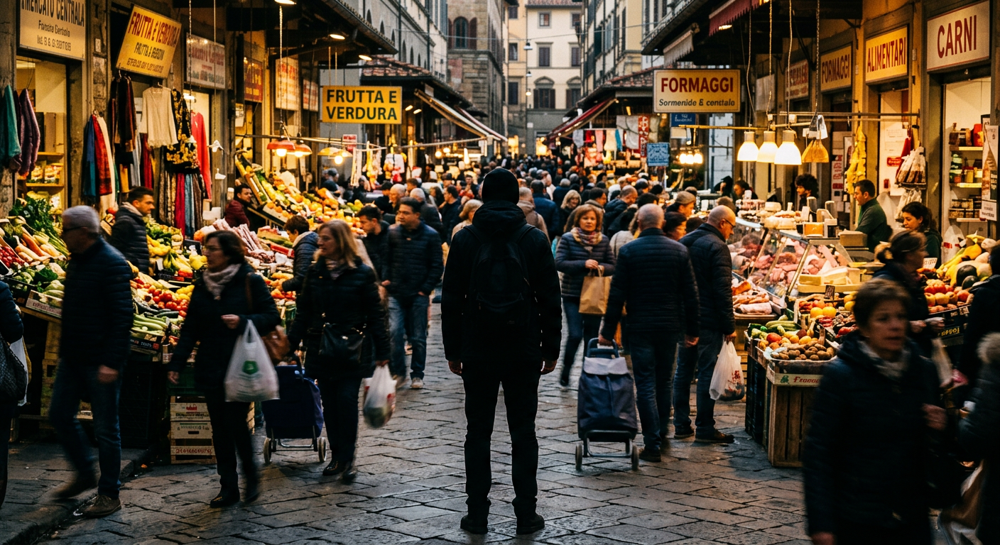
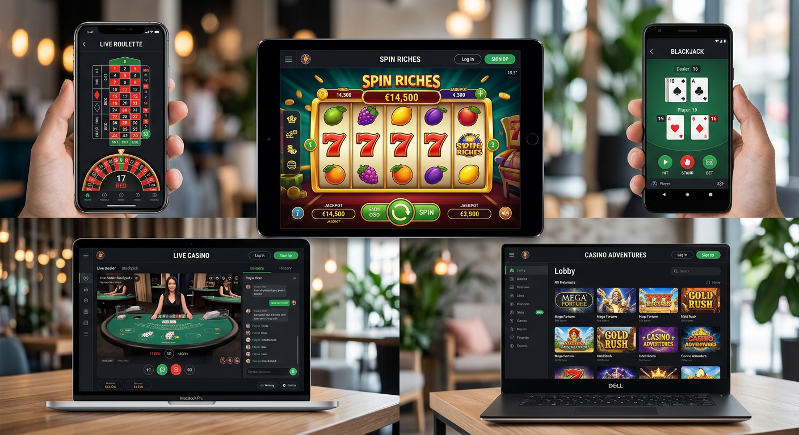
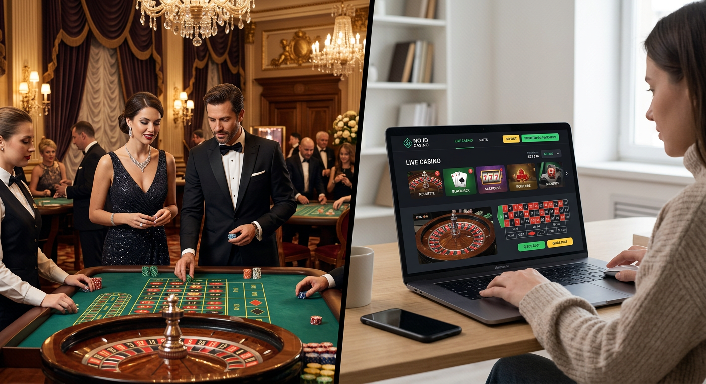
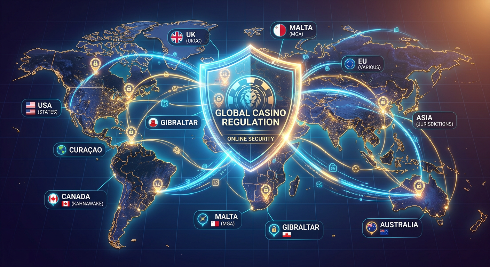

Casino senza documenti: I migliori siti per giocare senza verifica nel 2026
Il panorama del gioco d'azzardo digitale ha subito una trasformazione radicale nel corso dell'ultimo biennio. Entrando nel 2026, la priorità assoluta per gli utenti italiani non è più soltanto l'ampiezza del catalogo giochi, ma la tutela della privacy e la rapidità d'accesso. Un casino senza documenti rappresenta oggi la soluzione ideale per chi desidera iniziare a puntare senza dover attendere i lunghi tempi burocratici imposti dalla verifica dell'identità tradizionale.
Questa guida completa esplora l'universo delle piattaforme no-KYC (Know Your Customer), analizzando come la tecnologia blockchain e i nuovi protocolli di pagamento abbiano reso obsoleto l'invio di carte d'identità e bollette. Scopriremo insieme quali sono i portali più sicuri, i bonus più generosi e come navigare in questo settore con la massima consapevolezza nel 2026.
Classifica dei migliori casino senza documenti e senza verifica
La selezione che segue è il risultato di test approfonditi condotti dal nostro team di esperti IT. Abbiamo valutato la velocità dei prelievi, la stabilità dei server e, naturalmente, l'assenza totale di richieste documentali in fase di iscrizione e prelievo. Nel 2026, l'efficienza è il parametro fondamentale per distinguere un sito d'eccellenza da uno mediocre.
| Piattaforma | Bonus Principale | Punto di Forza | Voto |
|---|---|---|---|
| Wild Tokyo | 100% fino a 500€ + 100 FS | Interfaccia Futuristica | 9.8/10 |
| LamaBet | Fino a 1800€ di Benvenuto | App Mobile Nativa | 9.7/10 |
| Lucky Block | 200% fino a 10.000€ | Crypto-First No KYC | 9.6/10 |
| Need for Spin | 250% fino a 1500€ | Velocità di Caricamento | 9.5/10 |
| Winshark | Pacchetto 2500€ + 300 FS | Programma VIP Esclusivo | 9.4/10 |
Wild Tokyo - Il re dei bonus senza attese
Wild Tokyo si è confermato anche nel 2026 come uno dei leader indiscussi per chi cerca un casino senza documenti affidabile. La piattaforma utilizza un sistema di registrazione ultra-rapido che richiede solo un indirizzo email e la creazione di una password sicura. Questo approccio permette ai giocatori di tuffarsi immediatamente nelle slot machine dei migliori provider mondiali senza dover scannerizzare alcun documento.
Il brand Wild Tokyo brilla particolarmente per il suo design ispirato alle metropoli giapponesi, offrendo un'esperienza utente immersiva. I prelievi vengono elaborati quasi istantaneamente, specialmente se si utilizzano criptovalute o portafogli elettronici di ultima generazione, mantenendo fede alla promessa di un gioco fluido e privo di intoppi burocratici.
LamaBet - Esperienza mobile fluida e rapida
Per gli amanti del gioco in mobilità, LamaBet rappresenta l'apice tecnologico del 2026. Questo operatore ha investito massicciamente nell'ottimizzazione per smartphone, garantendo che ogni funzione, dal deposito al prelievo, sia accessibile con pochi tocchi. La gestione del conto non prevede l'invio di scartoffie, rendendolo un perfetto esempio di casinò senza verifica dell'identità obbligatoria.
Oltre alla rapidità, LamaBet si distingue per una libreria di giochi che supera i 7.000 titoli, inclusi tavoli dal vivo con croupier reali che parlano italiano. La sicurezza è garantita da protocolli di crittografia avanzati, assicurando che le transazioni rimangano private e protette da occhi indiscreti, un requisito fondamentale per chi sceglie un casino senza documenti.
Lucky Block - Il miglior crypto casino senza KYC
Lucky Block è diventato il punto di riferimento per l'integrazione tra Web3 e gaming online. Essendo una piattaforma basata nativamente su blockchain, non richiede alcuna forma di KYC tradizionale. I giocatori possono collegare il proprio wallet, depositare Bitcoin o altre altcoin e iniziare a giocare in pochi secondi. È la quintessenza della libertà digitale nel 2026.
La trasparenza è garantita dagli smart contract, che assicurano l'equità dei giochi (Provably Fair). In questo casino senza documenti, l'anonimato è totale: non vengono richiesti nomi, cognomi o indirizzi di residenza. I prelievi sono gestiti direttamente dalla rete blockchain, eliminando i tempi di attesa tipici dei circuiti bancari tradizionali e garantendo la massima riservatezza.
Cos'è esattamente un sito di gioco senza verifica?

Un sito di gioco senza verifica è una piattaforma online che permette agli utenti di registrarsi, depositare fondi, scommettere e prelevare vincite senza dover fornire documenti d'identità ufficiali come carta d'identità, passaporto o patenti. Nel 2026, questi portali sono diventati estremamente popolari grazie alla loro capacità di bypassare le lungaggini amministrative che spesso affliggono i siti con licenza nazionale stringente.
Questi operatori solitamente operano sotto licenze internazionali, come la Curaçao eGaming, che pur garantendo standard di sicurezza elevati, offrono una maggiore flessibilità nella gestione della privacy degli utenti. In un casino senza documenti, il processo di identificazione viene spesso delegato al metodo di pagamento scelto (come il possesso di un wallet crypto o l'accesso tramite sistemi bancari rapidi), rendendo superflua la copia fisica del documento.
Perché i giocatori italiani preferiscono l'anonimato?

La crescente richiesta di anonimato nel 2026 non è legata alla volontà di nascondere attività illecite, bensì a una maturata consapevolezza digitale. I giocatori italiani sono sempre più attenti a chi affidano i propri dati sensibili, specialmente in un'epoca in cui i data breach sono purtroppo frequenti. Scegliere un casino senza documenti significa ridurre drasticamente la propria impronta digitale e il rischio di furto d'identità.
Inoltre, l'anonimato permette una gestione più libera del proprio tempo libero. Molti utenti preferiscono che le proprie attività di svago non appaiano negli estratti conto bancari o in database centralizzati che potrebbero influenzare, ad esempio, la valutazione del merito creditizio. La discrezione offerta da un casinò senza obbligo di riconoscimento è dunque un valore aggiunto inestimabile nell'attuale mercato IT.
Privacy e protezione dei dati sensibili
Nel 2026, la protezione della privacy è diventata un diritto fondamentale per l'utente del web. Quando ci si iscrive a un casino senza documenti, si evita di caricare su server remoti scansioni ad alta risoluzione dei propri documenti personali. Questo elimina alla radice la possibilità che tali dati vengano rubati da hacker o venduti a terze parti per scopi pubblicitari aggressivi.
Le piattaforme come Boomerang o Lanista utilizzano sistemi di protezione SSL a 256 bit per criptare anche le poche informazioni necessarie (come l'email), garantendo che la comunicazione tra l'utente e il server rimanga privata. Questa architettura di sicurezza è superiore a quella di molti siti tradizionali, poiché si concentra sulla minimizzazione del dato raccolto.
Velocità di accesso e prelievi istantanei
Uno dei maggiori attriti nei casinò tradizionali è il tempo necessario per verificare un conto. Spesso, un giocatore deve attendere dai 2 ai 5 giorni lavorativi affinché il dipartimento di conformità approvi i documenti inviati. In un casino senza documenti, questo passaggio viene eliminato. Si deposita, si gioca e, in caso di vincita, si preleva immediatamente.
La velocità è particolarmente evidente nei siti che supportano le criptovalute o i sistemi Pay N Play. Qui, l'identità è legata alla transazione stessa. Poiché non c'è una verifica dell identità manuale da parte di un operatore umano, i software automatizzati possono autorizzare il pagamento dei fondi in pochi minuti, migliorando drasticamente l'esperienza complessiva dell'utente.
Evitare le restrizioni dell'autoesclusione AAMS
Molti giocatori cercano un casino senza documenti per riprendere a giocare responsabilmente anche se iscritti al registro dell'autoesclusione AAMS (ora ADM). Sebbene l'autoesclusione sia uno strumento fondamentale per la tutela del giocatore, talvolta gli utenti desiderano tornare a giocare su piattaforme internazionali che non sono collegate al database centralizzato italiano.
Questi siti offrono strumenti di auto-limitazione indipendenti e molto efficaci, permettendo al giocatore di gestire il proprio budget senza le restrizioni sistemiche imposte a livello nazionale. Giocare in un ambiente internazionale nel 2026 offre una libertà di scelta che molti utenti considerano essenziale per un'esperienza di intrattenimento completa e non paternalistica.
Tipologie di casino online senza documenti disponibili

Nel 2026, il mercato si è segmentato in diverse categorie tecnologiche, ognuna con i suoi vantaggi specifici. Non tutti i casino online senza verifica sono uguali: alcuni puntano tutto sulla blockchain, altri sulla semplicità dei pagamenti bancari istantanei, altri ancora sulla comodità delle app di messaggistica istantanea.
Comprendere queste differenze è cruciale per scegliere la piattaforma più adatta alle proprie esigenze. Che siate esperti di tecnologia o semplici appassionati di slot, esiste una tipologia di casino senza documenti progettata appositamente per il vostro stile di gioco e il vostro livello di competenza tecnica.
Crypto Casino e Blockchain Gaming
I crypto casino rappresentano la frontiera più avanzata del gioco d'azzardo online nel 2026. Utilizzando Bitcoin, Ethereum o Tether, queste piattaforme garantiscono un anonimato pressoché totale. Poiché la transazione avviene tra wallet crittografici, il casinò non ha bisogno di conoscere l'identità civile del giocatore per processare i pagamenti.
Oltre alla privacy, questi siti offrono il vantaggio del "Provably Fair". Questo sistema permette al giocatore di verificare matematicamente che l'esito di ogni giocata sia stato generato casualmente e non manipolato. In un casino senza documenti di tipo crypto, la fiducia non è riposta in un'autorità centrale, ma nel codice stesso della blockchain.
Piattaforme Pay N Play (Trustly)
Le piattaforme Pay N Play hanno rivoluzionato il concetto di "registrazione" nel 2026. Utilizzando servizi come Trustly, il giocatore può depositare fondi direttamente dal proprio conto corrente bancario. La banca trasmette al casino senza documenti solo i dati strettamente necessari per confermare la maggiore età e la validità del conto, senza che l'utente debba compilare moduli infiniti.
Questo modello è estremamente popolare nel Nord Europa e sta guadagnando terreno rapidamente anche in Italia. Il grande vantaggio è che il prelievo delle vincite è altrettanto rapido del deposito: i fondi tornano sul conto bancario dell'utente quasi in tempo reale, rendendo la verifica dell identità un processo invisibile e del tutto automatizzato.
Casino su Telegram: la nuova frontiera
Una delle novità più eclatanti del 2026 è l'ascesa dei casino basati su bot di Telegram. Queste piattaforme permettono di accedere a migliaia di slot e tavoli live direttamente dall'app di messaggistica. Grazie alla crittografia end-to-end di Telegram e all'integrazione di wallet Bitcoin interni, l'esperienza è rapidissima e totalmente anonima.
Giocare tramite Telegram elimina la necessità di scaricare app pesanti o di navigare su siti web complessi. Basta avviare il bot, effettuare un deposito veloce e si è pronti a partire. Per chi cerca un casino senza documenti che sia anche estremamente leggero e portatile, i bot di Telegram rappresentano la soluzione tecnologicamente più snella del momento.
Tipi di casino senza documenti

Oltre alle categorie tecnologiche sopra citate, possiamo classificare queste piattaforme in base all'offerta commerciale. Esistono siti specializzati in scommesse sportive che non richiedono documenti, e altri che invece si focalizzano esclusivamente sull'esperienza delle slot machine e del live casino. Nel 2026, la specializzazione è un segno di qualità.
I casinò senza verifica possono anche essere distinti tra quelli "puri" (che non chiederanno mai documenti, nemmeno per grandi prelievi) e quelli "ibridi" (che richiedono una verifica solo se si superano determinate soglie di prelievo cumulate). Sapere in quale categoria ricade il sito scelto è fondamentale per evitare sorprese al momento di incassare una grossa vincita.
- Crypto-Exclusive: Accettano solo valute digitali e garantiscono anonimato al 100%.
- Hybrid Platforms: Consentono di giocare con valute fiat (Euro) senza documenti fino a una certa soglia.
- Telegram Bots: La massima velocità tramite interfaccia di messaggistica.
- No-Account Casinos: Basati su sistemi di pagamento istantaneo che creano un profilo temporaneo basato sull'IBAN.
Sicurezza e licenze internazionali

Un errore comune è pensare che un casino senza documenti sia sinonimo di sito non sicuro. Al contrario, le migliori piattaforme del 2026 investono pesantemente in sicurezza informatica. Poiché non possono contare sulla fiducia derivante da un marchio nazionale, devono dimostrare la loro affidabilità attraverso la tecnologia e il rispetto di rigorose licenze internazionali.
La sicurezza non riguarda solo i pagamenti, ma anche l'integrità del software di gioco. Tutti i siti che raccomandiamo utilizzano Generatori di Numeri Casuali (RNG) certificati da laboratori indipendenti come iTech Labs o eCOGRA. In questo modo, giocare in un casinò senza invio di documenti è altrettanto sicuro, se non di più, che giocare su un sito tradizionale.
Licenza Curacao e-Gaming
La licenza rilasciata dal governo di Curacao è la più diffusa tra i casino senza documenti nel 2026. Questo ente regolatore è stato tra i primi a comprendere il potenziale delle criptovalute e della privacy online. La licenza Curaçao eGaming garantisce che l'operatore disponga di fondi sufficienti per pagare le vincite e che i giochi siano equi.
Scegliere un sito con questa licenza offre un equilibrio perfetto tra libertà e protezione. Gli operatori di Curacao sono tenuti a seguire standard internazionali contro il riciclaggio di denaro, ma lo fanno attraverso controlli tecnologici sofisticati che non appesantiscono l'esperienza dell'utente finale con richieste di documenti ridondanti.
Malta Gaming Authority (MGA) e modelli ibridi
Sebbene la MGA sia nota per essere più rigorosa rispetto a Curacao, nel 2026 ha introdotto nuovi protocolli che permettono ai casinò di operare con procedure di verifica molto più snelle. Alcuni casino online senza documenti operano sotto licenza maltese utilizzando sistemi di identificazione digitale automatizzata come lo SPID o sistemi bancari certificati.
Questi portali rappresentano la scelta ideale per chi desidera la massima tutela legale europea senza però rinunciare alla velocità. In questo caso, la verifica avviene in background durante il primo deposito, permettendo al giocatore di essere operativo in meno di 60 secondi senza aver caricato manualmente alcun file sul sito del casinò.
Perché i casinò richiedono i documenti?
È legittimo chiedersi perché la maggior parte dei siti richieda ancora la verifica dell identità. La ragione principale è legata alle normative antiriciclaggio (AML) e alla prevenzione del finanziamento al terrorismo. Le autorità di regolamentazione nazionali impongono queste procedure per assicurarsi che il denaro che entra ed esce dal sistema di gioco sia tracciabile e appartenga a persone reali.
Inoltre, i documenti servono a verificare che il giocatore sia maggiorenne e che non stia tentando di aprire conti multipli per abusare dei bonus. Tuttavia, nel 2026, un casino senza documenti moderno risolve questi problemi utilizzando l'analisi del comportamento dell'utente e l'identificazione basata sulla blockchain o su account di pagamento già verificati alla fonte, come appunto le banche o i grandi exchange di criptovalute.
Bonus e promozioni attivabili senza invio documenti
Uno dei vantaggi più tangibili nel 2026 è la possibilità di riscattare offerte incredibili senza dover attendere la convalida del conto. Un casino senza documenti è solitamente molto più generoso in termini di bonus, poiché ha costi operativi inferiori non dovendo gestire immensi dipartimenti di verifica manuale dei documenti.
Le promozioni variano dai classici bonus sul deposito ai free spin senza deposito immediato senza documenti, che permettono di testare le slot machine senza rischiare il proprio capitale. È importante però leggere sempre i termini e le condizioni, poiché anche nel 2026 i requisiti di scommessa (wagering) rimangono un elemento chiave da valutare.
Bonus di benvenuto e giri gratis
Il bonus benvenuto senza documenti è il biglietto da visita di ogni piattaforma che si rispetti. Spesso questi pacchetti includono una percentuale sul primo deposito che può arrivare anche al 200% o 300%. Ad esempio, siti come Need for Spin offrono bonus massicci che vengono accreditati istantaneamente non appena il deposito viene confermato dalla rete.
I giri gratis (free spins) sono altrettanto comuni. Molti utenti cercano specificamente free spin senza deposito immediato senza documenti non aams per poter vincere denaro reale senza dover prima caricare fondi o inviare la carta d'identità. Nel 2026, queste offerte sono diventate lo standard per attirare nuovi giocatori in un mercato sempre più competitivo.
Cashback settimanale per i giocatori regolari
Per chi gioca con costanza, il cashback è forse la promozione più interessante in un casino senza documenti. Questa formula prevede il rimborso di una parte delle perdite nette subite durante la settimana. È un modo eccellente per ammortizzare i periodi meno fortunati e continuare a divertirsi con un budget extra.
Le piattaforme come Winshark offrono programmi di cashback automatico che non richiedono alcuna attivazione manuale. Ogni lunedì, una percentuale (che può variare dal 10% al 25% a seconda del livello VIP) viene riaccreditata sul conto gioco sotto forma di bonus con requisiti di scommessa molto bassi, spesso pari a 1x.
Bonus casino senza deposito e senza invio documenti
La ricerca del bonus casino senza deposito e senza invio documenti è una delle tendenze più forti del 2026. Questo tipo di offerta permette di iniziare a giocare con un piccolo saldo reale o un numero prestabilito di giri gratuiti semplicemente confermando il proprio numero di telefono o l'indirizzo email. È il modo più puro per sperimentare un casinò senza verifica.
Questi bonus sono particolarmente apprezzati dai nuovi utenti che vogliono testare l'interfaccia di un sito come LamaBet o Winnita prima di impegnare somme più consistenti. Sebbene i limiti di vincita massima da questi bonus siano solitamente contenuti, rappresentano comunque un'opportunità reale di profitto senza alcun investimento iniziale e nella totale privacy.
Metodi di pagamento consigliati per restare anonimi
Per mantenere l'anonimato in un casino senza documenti, la scelta del metodo di pagamento è determinante. Nel 2026, i canali bancari tradizionali come i bonifici o le carte di credito sono meno consigliati se l'obiettivo è la privacy assoluta, poiché lasciano tracce indelebili negli estratti conto gestiti dalle banche centrali.
Le alternative moderne offrono velocità e discrezione. L'uso di Bitcoin e altre criptovalute è la scelta d'elezione per la maggior parte degli utenti. Tuttavia, esistono anche portafogli elettronici e voucher prepagati che consentono di operare in modo sicuro senza dover collegare direttamente il proprio conto corrente principale alla piattaforma di gioco.
- Criptovalute: Bitcoin, Ethereum, Litecoin e Tether (USDT) per transazioni istantanee e private.
- E-Wallets: MiFinity, Jeton e Revolut che offrono un layer di protezione tra banca e casinò.
- Voucher: Neosurf e CashtoCode, acquistabili con contanti per la massima riservatezza.
- Pagamenti Istantanei: Servizi che utilizzano le API bancarie senza condividere le credenziali d'accesso.
Vantaggi e svantaggi della scelta
Optare per un casino senza documenti comporta una serie di pro e contro che ogni giocatore dovrebbe soppesare attentamente. Nel 2026, i vantaggi superano spesso gli svantaggi, ma la consapevolezza rimane la migliore difesa per un gioco responsabile e sicuro.
Vantaggi:
- Accesso immediato: si inizia a giocare in meno di un minuto.
- Privacy totale: i propri documenti non finiscono su server esterni.
- Prelievi veloci: nessuna attesa per la verifica del conto prima di incassare.
- Nessuna restrizione territoriale aggressiva: accesso a giochi non disponibili sui mercati locali.
- Minore protezione legale in caso di dispute complesse.
- Necessità di avere una minima competenza con le criptovalute (in alcuni casi).
- Limiti di deposito iniziali talvolta più bassi per i conti non verificati.
Giri Gratis senza documenti
I giri gratis senza documenti rappresentano la calamita principale per i nuovi iscritti nel 2026. Molte piattaforme, come Fat Pirate o BetAlice, includono centinaia di free spins nei loro pacchetti di benvenuto. La particolarità è che queste giocate gratuite possono essere utilizzate immediatamente dopo il primo deposito rapido, senza dover attendere che un operatore umano controlli la validità del profilo.
Questi giri sono spesso validi sulle slot più popolari del momento, prodotte da colossi come Pragmatic Play o Nolimit City. Vincere un jackpot utilizzando giri gratis ottenuti in un casino senza documenti è un'esperienza che unisce il brivido del gioco alla soddisfazione di aver saltato ogni inutile passaggio burocratico. È la dimostrazione di come il settore si sia evoluto per servire meglio l'utente finale.
Need for Spin - 250% fino a 1500€ + 250 FS
Analizziamo più da vicino uno dei protagonisti del mercato 2026: Need for Spin. Questo operatore ha costruito la sua reputazione sulla velocità, come suggerisce il nome stesso. L'offerta di benvenuto è mastodontica: un 250% di bonus che permette di triplicare il capitale iniziale, accompagnato da ben 250 giri gratis per esplorare le ultime novità del settore slot.
In questo casino senza documenti, l'enfasi è posta sulla gamification. Gli utenti guadagnano monete virtuali per ogni scommessa, che possono poi essere scambiate nel "negozio" interno per ulteriori bonus o giri gratuiti. Tutto questo avviene in un ambiente sicuro, protetto da SSL, e senza che venga mai chiesta una foto del passaporto per accedere ai premi fedeltà.
№3. Lamabet — Bonus benvenuto fino a 1800€
Al terzo posto della nostra classifica 2026 troviamo LamaBet. Questo sito si distingue non solo per l'assenza di KYC, ma per l'entità del suo pacchetto di benvenuto che arriva fino a 1800€. È una cifra considerevole, pensata per attirare sia i giocatori occasionali che gli high roller che cercano un casino senza documenti dove poter scommettere somme importanti con la massima discrezione.
La piattaforma di LamaBet è estremamente moderna e supporta una vasta gamma di metodi di pagamento, inclusi i sistemi più rapidi del 2026. L'assistenza clienti è disponibile 24/7 via chat e risponde in italiano, un dettaglio non trascurabile quando si gioca su siti con licenza internazionale. La facilità di navigazione rende questo sito uno dei più consigliati per chi vuole giocare in totale relax.
Winshark
Winshark è l'operatore che nel 2026 ha ridefinito il concetto di Programma VIP in un casino senza documenti. Mentre molti siti no-KYC offrono servizi standard, Winshark tratta ogni giocatore come un cliente d'élite. Il loro bonus di benvenuto fino a 2500€ è strutturato per premiare i primi tre depositi, garantendo una longevità di gioco superiore alla media.
La sicurezza su Winshark è garantita da protocolli di ultima generazione che assicurano che l'anonimato dell'utente non comprometta la protezione dei suoi fondi. Con una selezione di oltre 100 provider di software, tra cui spiccano i nomi di Betlabel e Pistolo gaming, Winshark offre un'esperienza di gioco completa, veloce e soprattutto priva di noiose verifiche documentali.
Assenza di Controllo KYC
L'assenza di controllo KYC (Know Your Customer) è l'elemento cardine che definisce un casino senza documenti. Nel 2026, la tecnologia ha permesso di sostituire il controllo manuale dei documenti con analisi algoritmiche del rischio. Questo significa che il casinò può proteggersi dalle frodi senza disturbare l'utente onesto con richieste invasive.
Per il giocatore, questo si traduce in una libertà senza precedenti. Non c'è il timore che i propri documenti vengano rifiutati per una foto leggermente sfocata o per un indirizzo non aggiornato. In un casinò senza verifica, l'utente è considerato affidabile fino a prova contraria, invertendo l'approccio spesso punitivo delle piattaforme tradizionali.
Possibilità di giocare senza autoesclusione
Un tema delicato ma rilevante nel 2026 è la possibilità di giocare senza autoesclusione. Molti utenti che si sono iscritti al registro ADM per un momento di riflessione, si trovano poi impossibilitati a tornare a giocare anche dopo mesi di pausa consapevole. Un casino senza documenti non essendo collegato al database nazionale, permette a questi utenti di riprendere l'attività.
È fondamentale sottolineare che questo deve avvenire sempre in un'ottica di gioco responsabile. Le piattaforme internazionali offrono comunque strumenti per impostare limiti di deposito o pause temporanee. La differenza è che la gestione del proprio comportamento di gioco torna nelle mani dell'individuo, promuovendo un approccio più maturo e consapevole al divertimento online.
Fase 3: Inizia subito a giocare
Una volta scelto il proprio casino senza documenti ideale, il processo per iniziare è disarmante nella sua semplicità. Abbiamo sintetizzato i passaggi necessari per essere operativi nel 2026, eliminando ogni possibile confusione.
- Scegli un operatore: Seleziona uno dei siti dalla nostra classifica verificata come Wild Tokyo o Lucky Block.
- Registrazione lampo: Inserisci solo email e password. Non sono richiesti dati anagrafici completi o caricamento di file.
- Deposito istantaneo: Scegli il tuo metodo preferito, come Bitcoin o un e-wallet. I fondi appariranno sul conto in pochi secondi.
- Riscatta il bonus: Assicurati di attivare il bonus benvenuto senza documenti per massimizzare il tuo saldo iniziale.
- Gioca e preleva: Divertiti con le tue slot preferite e, quando decidi di incassare, richiedi il prelievo senza dover inviare alcuna carta d'identità.
Perché molti utenti italiani evitano la verifica dell'identità
Oltre alla privacy, c'è un fattore di comodità estrema. Nel 2026, viviamo in un mondo "on-demand" dove ogni attesa è percepita come un malfunzionamento. Dover cercare un documento, scansionarlo e caricarlo è visto come un ostacolo anacronistico. I casino senza documenti rispondono alla domanda di efficienza della generazione digitale.
Inoltre, molti utenti utilizzano dispositivi aziendali o condivisi e non desiderano lasciare copie di documenti sensibili nelle cartelle di download o nelle cache dei browser. L'evitare la verifica dell identità è quindi una scelta di igiene digitale che accomuna professionisti IT e giocatori esperti che conoscono bene i rischi della rete.
Conclusioni
Il 2026 ha consacrato il casino senza documenti come la scelta preferenziale per chi cerca un'esperienza di gioco moderna, sicura e rispettosa della privacy. La combinazione di licenze internazionali solide, tecnologia blockchain e sistemi di pagamento istantanei ha eliminato la necessità di procedure burocratiche lente e invasive.
Che la vostra priorità sia la velocità dei prelievi, l'anonimato delle transazioni o l'accesso a bonus generosi come quelli di LamaBet o Wild Tokyo, il mercato attuale offre soluzioni eccellenti. Ricordate sempre di giocare responsabilmente e di scegliere piattaforme verificate per assicurarvi che il vostro divertimento rimanga tale. Per approfondire le dinamiche del gioco d'azzardo e la sua regolamentazione, potete consultare fonti autorevoli come la pagina Wikipedia sul gioco d'azzardo o le analisi di settore su Forbes.
Il futuro del gaming è senza barriere, e i casino online senza documenti ne sono la prova più tangibile. Buona fortuna e buon divertimento nelle migliori sale da gioco virtuali del 2026!
Domande Frequenti sui casino senza documenti
È legale giocare in un casino senza documenti in Italia?
Sì, è legale accedere a piattaforme internazionali nel 2026. Sebbene questi siti non abbiano una licenza locale ADM, operano con licenze internazionali valide (come Curacao) che permettono loro di accettare giocatori da tutto il mondo, garantendo standard di sicurezza elevati.
Quali sono i tempi di prelievo in un casinò senza verifica?
I tempi sono generalmente molto più rapidi rispetto ai siti tradizionali. Utilizzando criptovalute come Bitcoin, i prelievi possono essere istantanei o richiedere pochi minuti. Con gli e-wallet, il tempo medio di attesa raramente supera le 24 ore.
Posso davvero ottenere un bonus senza inviare la carta d'identità?
Assolutamente sì. Nel 2026, il bonus casino senza documento è lo standard per i siti no-KYC. Il bonus viene erogato in base al deposito o alla semplice registrazione dell'account, senza passaggi intermedi di verifica documentale.
I casino senza documenti sono sicuri?
La sicurezza dipende dall'operatore. I siti che raccomandiamo, come Wild Tokyo e Need for Spin, utilizzano crittografia SSL avanzata e giochi certificati. È sempre bene controllare la presenza di una licenza valida e le recensioni degli utenti.
Cosa succede se vinco una cifra molto alta?
Nella maggior parte dei casino senza documenti, le grandi vincite vengono pagate con la stessa velocità di quelle piccole. Alcuni siti ibridi potrebbero richiedere una verifica una tantum per cifre eccezionalmente elevate (es. oltre 10.000€), ma i crypto casino puri mantengono l'anonimato anche per i jackpot.

Content strategist e copywriter con esperienza decennale nel marketing digitale.